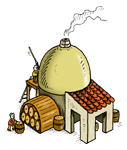

{kind=link}


Tiempo de construcción de los edificios 8 - 12
Cervecería
Condiciones previas: Granero grado 20, Plaza de Reuniones grado 10, sólo se puede construir en la aldea Capital, Raza: Germanos, Versión de Travian 3.5 o superior
En la Cervecería se elaboran deliciosas bebidas. Estas bebidas hacen que tus súbditos estén más contentos con tu gobierno y dificulta el que sean persuadidos por otros emperadores para unirse a sus reinos.
Grados de los edificios| Grado |  |
 |
 |
 |
 |
PC |
| 1 | 1460 | 930 | 1250 | 1740 | 6 | 5 |
| 2 | 2045 | 1300 | 1750 | 2435 | 3 | 6 |
| 3 | 2860 | 1825 | 2450 | 3410 | 3 | 7 |
| 4 | 4005 | 2550 | 3430 | 4775 | 3 | 8 |
| 5 | 5610 | 3575 | 4800 | 6685 | 3 | 10 |
| 6 | 7850 | 5000 | 6725 | 9360 | 4 | 12 |
| 7 | 10995 | 7000 | 9410 | 13100 | 4 | 14 |
| 8 | 15390 | 9805 | 13175 | 18340 | 4 | 17 |
| 9 | 21545 | 13725 | 18445 | 25680 | 4 | 21 |
| 10 | 30165 | 19215 | 25825 | 35950 | 4 | 25 |
| Suma | 101925 | 64925 | 87260 | 121475 | 38 | |
Tiempo de construcción de los edificios 8 - 12
| Grado | EP 8 | EP 9 | EP 10 | EP 11 | EP 12 |
| 1 | 1:43:10 | 1:39:30 | 1:35:50 | 1:32:20 | 1:29:00 |
| 2 | 2:07:20 | 2:02:50 | 1:58:20 | 1:54:10 | 1:50:00 |
| 3 | 2:35:30 | 2:29:50 | 2:24:30 | 2:19:20 | 2:14:20 |
| 4 | 3:08:10 | 3:01:20 | 2:54:50 | 2:48:30 | 2:42:30 |
| 5 | 3:46:00 | 3:37:50 | 3:30:00 | 3:22:30 | 3:15:10 |
| 6 | 4:29:50 | 4:20:10 | 4:10:50 | 4:01:50 | 3:53:00 |
| 7 | 5:20:50 | 5:09:10 | 4:58:10 | 4:47:20 | 4:37:00 |
| 8 | 6:19:50 | 6:06:10 | 5:53:00 | 5:40:20 | 5:28:00 |
| 9 | 7:28:20 | 7:12:10 | 6:56:40 | 6:41:40 | 6:27:10 |
| 10 | 8:47:50 | 8:28:50 | 8:10:30 | 7:52:50 | 7:35:50 |
| Suma | 45:46:50 | 44:07:50 | 42:32:40 | 41:00:50 | 39:32:00 |
Buscar
Configuración del FAQ